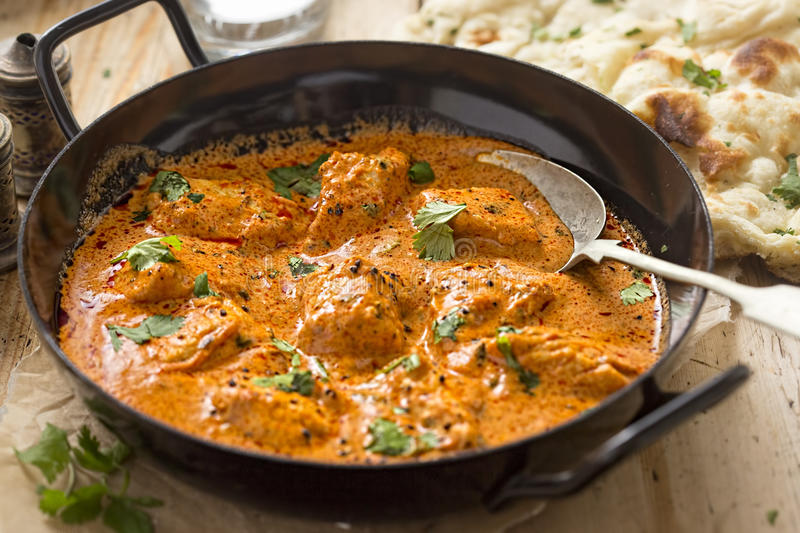

Butter Chicken

Butter Chicken
This is a simple, inexpensive preparation on classic
indian Butter Chicken. It removes some of the steps, and therefore some of labor and cost, while still delivering tons of flavor.
Ingredients
- 1 1/2# boneless, skinless chicken thighs
- 8 oz whole fat yogurt
- 1 tsp garam masala
- kosher salt
- 2" knob of ginger, brunoised
- 1 yellow onion, diced
- 14 oz crushed tomatoes
- 2 tsp smoked paprika
- 2 tsp ground cumin
- 1 T garam masala
- 1 1/2 t tumeric
Steps:
- cut chicken into 1" pieces; marinade by combining yogurt, 1 tsp garam masala, and kosher salt
- let sit 30 minutes - overnight
- chop onion, brunoise ginger; set aside
- Heat olive oil in a dutch oven or large saute pan;
- in batches, sear the chicken; put aside
- sweat onion, ginger 3-4 minutes; add 1 T of water to help free the fond
- add the spices; toast gently 1-2 minutes
- add in crushed tomatoes, along with 1 cup of water
- simmer sauce 5-8 minutes, until thickened; blend with hand blender to smooth if desired
- return chicken to the pan; simmer another 3-5 minutes to cook through
- add 1 cup heavy cream; simmer 3-4 minutes on low
- mount the pan with 2 T unsalted butter, stirred in. Serve over steamed rice